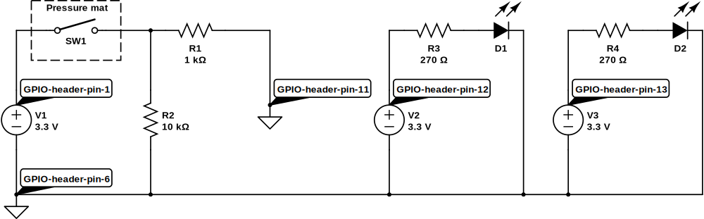
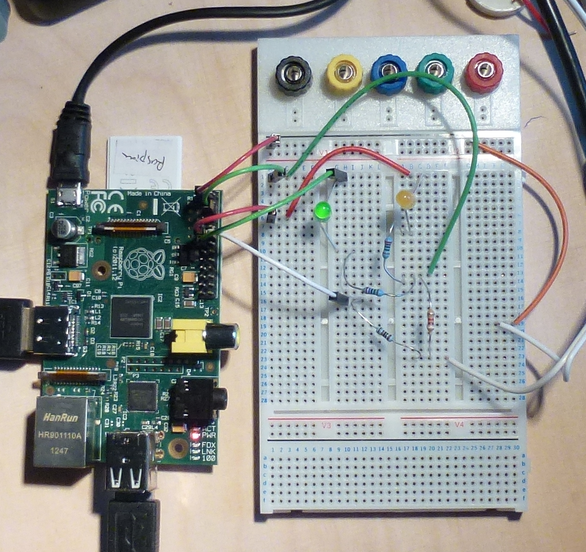

Parents — they're quite handy for doing the shopping and making breakfast and the like, but they do tend to get in the way, don't they? And even perfectly innocent teenage activities like building a particle accelerator in your bedroom can easily lead to awkward questions and family misunderstandings.
Let's use a Pi and a pressure mat to give an early warning of parental feet in the corridor.
Materials:
The first part is easy: we just replace the switch in the reading from switches circuit with a pressure mat1. Here's an example mat:
This works just like a switch — there are two wires to connect to, and when a heavy object (e.g. a parent) stands on the mat the two wires are connected (i.e. the resistance between them cycles between very high and very low).2 So we can use exactly the same circuit we used earlier for reading from a switch and turning an LED on or off:
One limitation of this circuit is that if Mum should happen to pop in one day and zap 50,000 volts across the Pi's GPIO pins the poor thing is unlikely to remain enthusiastic about driving our indicator LED — but we won't actually know that anything has changed, because as it stands there is no indication of normal operation as opposed to the various possible failure conditions. The next circuit addresses this limitation by adding another LED that is lit up when the pressure pad is not being stood on. That way we'll have an indicator of what state the system is in for both the "everything's ok" and the "run and hide!" conditions, so we'll immediately know if we've forgotten to switch the thing on, or if one of the LEDs has died, or etc.
The circuit:

The breadboard for this circuit looks like this:

The green LED runs when the mat is not being stood on, indicating that all is fine; the yellow LED (red would also be a good colour) lights up when it's time to hide the particle accelerator and pretend to be doing the homework.
A closer look:

We need a new program to drive the extra LED (which is on Wiring Pi's GPIO 2, connected on physical header pin 13). In Unix shell script a suitable program is this:
gpio mode 0 in
gpio mode 1 out
gpio mode 2 out
while :
do
if [ `gpio read 0` == 1 ]
then
gpio write 1 1
gpio write 2 0
else
gpio write 1 0
gpio write 2 1
fi
sleep 1
done
Here the two LEDs are controlled on GPIO 1 and 2, and as before we're reading the input on GPIO 0. When someone stands on the pressure mat the input is 1, and the first branch of the if statement will turn the first LED on and the second one off; otherwise the reverse will happen. So of our two LEDs, one will indicate safety and the other an alarm state.
Job done.